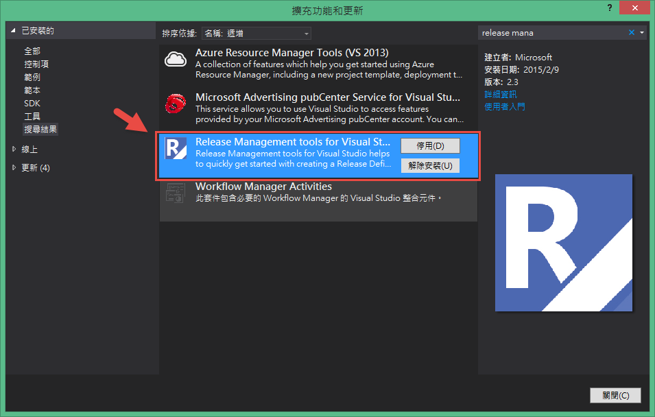
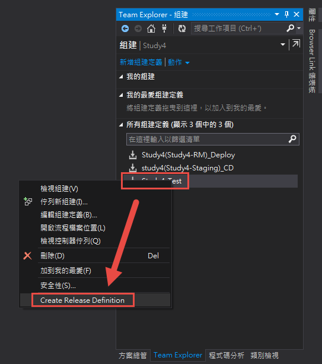
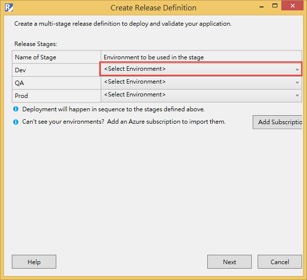
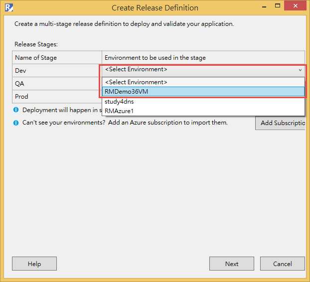
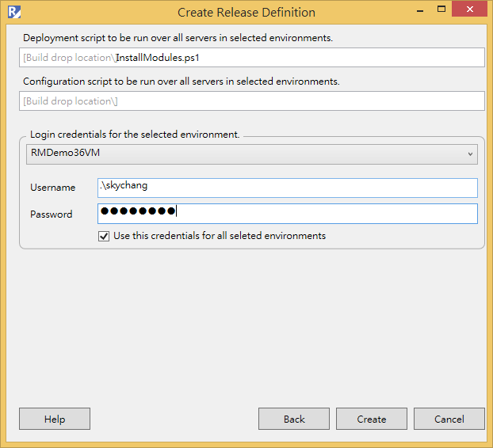
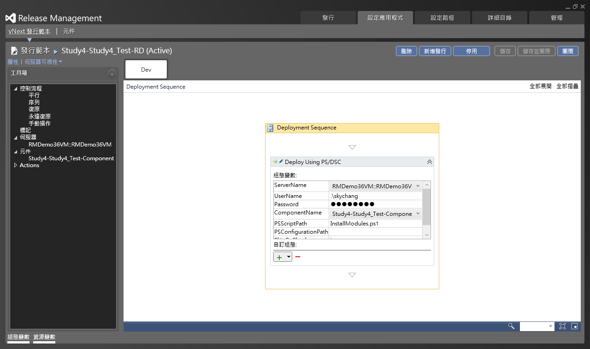

前言
前面我們浩浩蕩蕩的花了那麼多時間做設定，但其實，Microsoft已經有提供了快速設定的工具，雖然快速設定的工具很快就可以完成部分的設定，但如果不了解他是做甚麼的，那基本上還是會搞的胡煞煞，其次，他也只設定了Azure的環境而已，到最後還是要回到Release Management Client來進行設定 PowerShell 、範本、元件等等的設定。
所以小弟在這邊建議，還是希望大家能了解Release Management的設定，最後再回頭看這快速設定的工具。
Release Management Tools
這個工具是掛在Visual Studio裡面，所以，在使用這個工具之前，
我們要先透過Visual Studio的擴充功能和更新，來安裝此工具。
如下圖，我們可以找到Release Management Tools

接下來，我們就可以從組件定義裡面，選擇你想要使用Release Management的組件定義。

然後，就會看到熟悉的文字，是的，Release Management Tools預設的情況下，幫我們先設定好了Dev、QA、Prod；而這邊有個好處，就是我們可以透過新增Azure的訂閱，來新增Azure訂閱；那好處在哪邊??至少可以讓我們不用去尋找PublishSettings…. ( 好吧，某方面來說，的確算是好處 )，那下載下來的檔案，匯入進去後，你就可以輕鬆的選擇帳號和Storage account了。

那其實從下圖的位置可以看到，當我們有Azure帳號，就可以抓到Cloud Service的機器。 ( 或是說Azure的環境 )

接下來，大家一定又更加的耳熟感，這其實就是設定Release Management Client的範本，那大家可能會問，那元件哩!? PowerShell哩!? 流程哩!?
不好意思，元件的部分，完全沒設定；PowerSehll也完全沒有；流程則是由工具自動產生一個固定的流程了…

當上圖完成後，其實我們打開Release Management Client一看，其實剛剛設定的地方，就是在這邊….

後記
的確，這個工具目前還不是非常的強大，但某方面來說，透過此工具還是可以節省掉一些時間，但對於完全不知道Release Management的朋友們，可能就不是很適合了，所以還是建議大家，先把Release Management Client的設定了解和學會後，再用這個Tools加速會比較好喔!!